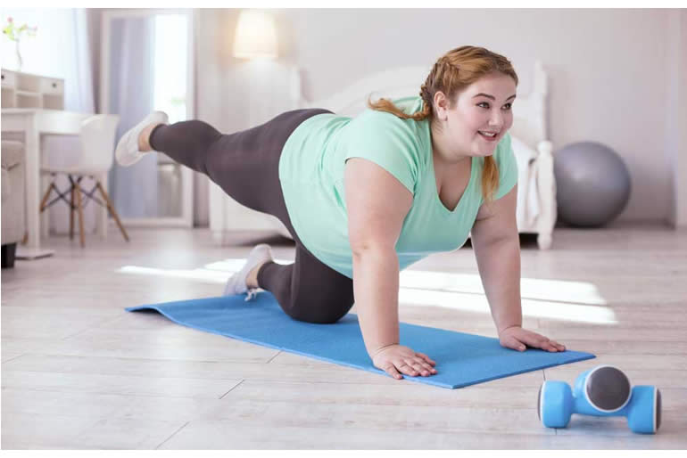

El tratamiento de la obesidad debe ser integral y multidisciplinario para alcanzar y mantener un peso saludable. Aquí tienes algunas estrategias clave:
Alimentación:
No existe una pauta alimentaria única para bajar de peso, pero junto con un dietista-nutricionista, se diseña un plan de alimentación equilibrado y variado.
Se debe reducir el aporte de calorías y elegir alimentos más saludables:
Aumenta la ingesta de productos vegetales como verduras, frutas, cereales integrales y legumbres.
Consume pequeñas cantidades de grasa saludable (aceite de oliva, frutos secos, pescados azules).
Limita el consumo de carnes rojas y derivados, así como la adición de sal y azúcar.
Evita alimentos ricos en grasas saturadas y bebidas azucaradas.
Planifica las comidas, mantén horarios regulares y equilibra las tomas.
Ejercicio físico:
La actividad física regular contribuye al control del peso y mejora los factores de riesgo asociado
Se recomienda iniciar con al menos 150 minutos de actividad fisica por semana e incrementar gradualmente hasta 300 minutos o varias a 150 minutos de actividad intensa aerobical
3. Opciones adicionales:
Fármacos: En función del grado de obesidad, se pueden administrar medicamentos para potenciar la pérdida de peso.
Cirugia bariatrica: En casos mas severos, se considera la cirugia para reducir el tamaño del estomago o modificar la absorcion de nutrientes
Recuerda que siempre es importante consultar con un profesional de la salud para evaluar tu situación específica y recibir recomendaciones personalizadas.
| SIGUIENTE | ANTERIOR | MENU |